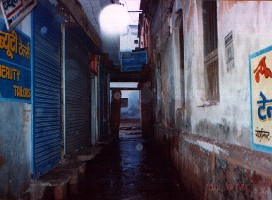
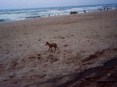
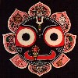
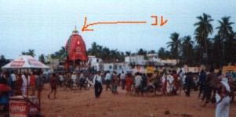

|
#とりあえずMughal Sarai駅からリクシャーの沢山集まる辺りへ歩き出すと、やっぱりインド人が怪しい英語で喋りかけて来る。「俺が案内してやる」とか「そっちじゃなくて、こっちでリクシャーに乗るんだ！」とか、いい加減向こうから話し掛けてくるインド人は絶対まったく信用ならない事に気付きはじめたのはこの時くらいじゃなかったかな？ とにかく無視して大通りへ、 |
 |
|
#宿の部屋に戻ると、買い置きしておいたバナナが無い！ 宿のオッサンによると「ベランダの扉を開け放しておくから、猿が入ってきてとっていった」との事。 その後、数回バナラシで猿に遭遇。この街で一番強暴な生物です。 写真は宿のガキンチョ。携帯珍しいみたい。 |

#漁村(fishermen village)へ、魚と蟹を食べる(100Rsくらい)。漁村とは砂浜沿いに有るほったて小屋の事、一昨年来たサイクロンでは随分な人が死んだとか。そりゃ死ぬわな、この建物じゃ。|
 |
#6月末から7月の頭にかけてはプリーではジャガンナート神(画像のヤツ)のお祭りをやってます。 ジャガンナート神社の通りに山車(のようなモノ) が出て、露天が沢山。みょーに賑わってます。なにかねぶた祭りに近いセンスを感じました。 |

#で、どんなかと言うとこんな。5m位の高さ。